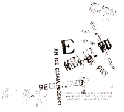

Official Proclamation -><- ODD# III(b)/4,i;18Aft3135
Official Proclamation -><- ODD# III(b)/4,i;18Aft3135
POEE DISORGANIZATIONAL MATRIX
V) THE HOUSE OF APOSTLES OF ERIS
For the Eristocracy and the Cabalablia
A. The Five Apostles of ERIS
B. The Golden Apple Corps (KSC)
C. Episkoposes of The Discordian Society
D. POEE Cabal Priests
E. Saints, Erisian Avatars, and Like Personages
IV) THE HOUSE OF THE RISING PODGE
For the Disciples of Discordia
A. Office of My High Reverence, The Polyfounder
B. Council of POEE Priests
C. The LEGION OF DYNAMIC DISCORD
D. Eristic Avatars
E. Aneristic Avatars
III) THE HOUSE OF THE RISING HODGE
For the Bureaucracy
A. The Bureau of Erisian Archives
B. The Bureau of The POEE Epistolary, and The Division of Dogmas
C. The Bureau of Symbols, Emblems, Certificates and Such
D. The Bureau of Eristic Affairs, and The Administry for The Unenlightened Eristic Horde
E. The Bureau of Aneristic Affairs, and the Administry for the Orders of Discordia
II) THE HOUSE OF THE RISING COLLAPSE
For the Encouragement of Liberation of Freedom, and/or the
Discouragement of the Immanentizing of the Eschaton
A. The Breeze of Wisdom and/or The Wind of Insanity
B. The Breeze of Integrity and/or The Wind of Arrogance
C. The Breeze of Beauty and/or The Wind of Outrages
D. The Breeze of Love and/or The Wind of Bombast
E. The Breeze of Laughter and/or The Wind of Bullshit
I) THE OUT HOUSE
 For what is left over
A. Miscellaneous Avatars
B. The Fifth Column
C. POEE =POPES= everywhere
D. Drawer "O" for OUT OF FILE
E. Lost Documents and Forgotten Truths
OFFICIAL - POEE
Head Temple, San Francisco
HOUSE OF THE RISING PODGE
Bureau of The POEE Epistolary